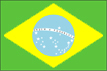

{kind=link}


![[Country map of Brazil]](../maps/br-map.jpg)
| Brazil |  |
|
| | |
| Introduction |
Background: Following three centuries under the rule of Portugal, Brazil became an independent nation in 1822. By far the largest and most populous country in South America, Brazil has overcome more than half a century of military intervention in the governance of the country to pursue industrial and agricultural growth and development of the interior. Exploiting vast natural resources and a large labor pool, Brazil became Latin America's leading economic power by the 1970s. Highly unequal income distribution remains a pressing problem.
| Geography |
Location: Eastern South America, bordering the Atlantic Ocean
Geographic coordinates: 10 00 S, 55 00 W
Map references: South America
Area:
total:
8,511,965 sq km
land:
8,456,510 sq km
water:
55,455 sq km
note:
includes Arquipelago de Fernando de Noronha, Atol das Rocas, Ilha da Trindade, Ilhas Martin Vaz, and Penedos de Sao Pedro e Sao Paulo
Area - comparative: slightly smaller than the US
Land boundaries:
total:
14,691 km
border countries:
Argentina 1,224 km, Bolivia 3,400 km, Colombia 1,643 km, French Guiana 673 km, Guyana 1,119 km, Paraguay 1,290 km, Peru 1,560 km, Suriname 597 km, Uruguay 985 km, Venezuela 2,200 km
Coastline: 7,491 km
Maritime claims:
contiguous zone:
24 nm
continental shelf:
200 nm
exclusive economic zone:
200 nm
territorial sea:
12 nm
Climate: mostly tropical, but temperate in south
Terrain: mostly flat to rolling lowlands in north; some plains, hills, mountains, and narrow coastal belt
Elevation extremes:
lowest point:
Atlantic Ocean 0 m
highest point:
Pico da Neblina 3,014 m
Natural resources: bauxite, gold, iron ore, manganese, nickel, phosphates, platinum, tin, uranium, petroleum, hydropower, timber
Land use:
arable land:
5%
permanent crops:
1%
permanent pastures:
22%
forests and woodland:
58%
other:
14% (1993 est.)
Irrigated land: 28,000 sq km (1993 est.)
Natural hazards: recurring droughts in northeast; floods and occasional frost in south
Environment - current issues:
deforestation in Amazon Basin destroys the habitat and endangers the existence of a multitude of plant and animal species indigenous to the area; air and water pollution in Rio de Janeiro, Sao Paulo, and several other large cities; land degradation and water pollution caused by improper mining activities
note:
President CARDOSO in September 1999 signed into force an environmental crime bill which for the first time defines pollution and deforestation as crimes punishable by stiff fines and jail sentences
Environment - international agreements:
party to:
Antarctic-Environmental Protocol, Antarctic Treaty, Biodiversity, Climate Change, Desertification, Endangered Species, Environmental Modification, Hazardous Wastes, Law of the Sea, Marine Dumping, Nuclear Test Ban, Ozone Layer Protection, Ship Pollution, Tropical Timber 83, Tropical Timber 94, Wetlands, Whaling
signed, but not ratified:
Climate Change-Kyoto Protocol
Geography - note: largest country in South America; shares common boundaries with every South American country except Chile and Ecuador
| People |
Population:
172,860,370
note:
Brazil took an intercensal count in August 1996 which reported a population of 157,079,573; that figure was about 5% lower than projections by the US Census Bureau, which is close to the implied underenumeration of 4.6% for the 1991 census; estimates for this country explicitly take into account the effects of excess mortality due to AIDS; this can result in lower life expectancy, higher infant mortality and death rates, lower population and growth rates, and changes in the distribution of population by age and sex than would otherwise be expected (July 2000 est.)
Age structure:
0-14 years:
29% (male 25,607,074; female 24,670,960)
15-64 years:
66% (male 55,793,005; female 57,598,489)
65 years and over:
5% (male 3,727,912; female 5,462,930) (2000 est.)
Population growth rate: 0.94% (2000 est.)
Birth rate: 18.84 births/1,000 population (2000 est.)
Death rate: 9.37 deaths/1,000 population (2000 est.)
Net migration rate: -0.03 migrant(s)/1,000 population (2000 est.)
Sex ratio:
at birth:
1.05 male(s)/female
under 15 years:
1.04 male(s)/female
15-64 years:
0.97 male(s)/female
65 years and over:
0.68 male(s)/female
total population:
0.97 male(s)/female (2000 est.)
Infant mortality rate: 38.04 deaths/1,000 live births (2000 est.)
Life expectancy at birth:
total population:
62.94 years
male:
58.54 years
female:
67.56 years (2000 est.)
Total fertility rate: 2.13 children born/woman (2000 est.)
Nationality:
noun:
Brazilian(s)
adjective:
Brazilian
Ethnic groups: white (includes Portuguese, German, Italian, Spanish, Polish) 55%, mixed white and black 38%, black 6%, other (includes Japanese, Arab, Amerindian) 1%
Religions: Roman Catholic (nominal) 80%
Languages: Portuguese (official), Spanish, English, French
Literacy:
definition:
age 15 and over can read and write
total population:
83.3%
male:
83.3%
female:
83.2% (1995 est.)
| Government |
Country name:
conventional long form:
Federative Republic of Brazil
conventional short form:
Brazil
local long form:
Republica Federativa do Brasil
local short form:
Brasil
Data code: BR
Government type: federative republic
Capital: Brasilia
Administrative divisions: 26 states (estados, singular - estado) and 1 federal district* (distrito federal); Acre, Alagoas, Amapa, Amazonas, Bahia, Ceara, Distrito Federal*, Espirito Santo, Goias, Maranhao, Mato Grosso, Mato Grosso do Sul, Minas Gerais, Para, Paraiba, Parana, Pernambuco, Piaui, Rio de Janeiro, Rio Grande do Norte, Rio Grande do Sul, Rondonia, Roraima, Santa Catarina, Sao Paulo, Sergipe, Tocantins
Independence: 7 September 1822 (from Portugal)
National holiday: Independence Day, 7 September (1822)
Constitution: 5 October 1988
Legal system: based on Roman codes; has not accepted compulsory ICJ jurisdiction
Suffrage: voluntary between 16 and 18 years of age and over 70; compulsory over 18 and under 70 years of age
Executive branch:
chief of state:
President Fernando Henrique CARDOSO (since 1 January 1995); Vice President Marco MACIEL (since 1 January 1995); note - the president is both the chief of state and head of government
head of government:
President Fernando Henrique CARDOSO (since 1 January 1995); Vice President Marco MACIEL (since 1 January 1995); note - the president is both the chief of state and head of government
cabinet:
Cabinet appointed by the president
elections:
president and vice president elected on the same ticket by popular vote for four-year terms; election last held 4 October 1998 (next to be held NA October 2002)
election results:
Fernando Henrique CARDOSO reelected president; percent of vote - 53%
Legislative branch:
bicameral National Congress or Congresso Nacional consists of the Federal Senate or Senado Federal (81 seats; three members from each state or federal district elected according to the principle of majority to serve eight-year terms; one-third elected after a four year period, two-thirds elected after the next four-year period) and the Chamber of Deputies or Camara dos Deputados (513 seats; members are elected by proportional representation to serve four-year terms)
elections:
Federal Senate - last held 4 October 1998 for one-third of Senate (next to be held NA October 2002 for two-thirds of the Senate); Chamber of Deputies - last held 4 October 1998 (next to be held NA October 2002)
election results:
Federal Senate - percent of vote by party - NA%; seats by party - PMDB 27, PFL 20, PSDB 16, PT 7, PPB 5, PSB 3, PDT 2, PPS 1; Chamber of Deputies - percent of vote by party - NA%; seats by party - PFL 106, PSDB 99, PMDB 82, PPB 60, PT 58, PTB 31, PDT 25, PSB 19, PL 12, PCdoB 7, other 14
Judicial branch: Supreme Federal Tribunal, 11 judges are appointed for life by the president and confirmed by the Senate
Political parties and leaders: Brazilian Democratic Movement Party or PMDB [Jader BARBALHO, president]; Brazilian Labor Party or PTB [Jose Carlos MARTINEZ, president]; Brazilian Social Democracy Party or PSDB [Teotinho VILELA Filho, president]; Brazilian Socialist Party or PSB [Miguel ARRAES, president]; Brazilian Progressive Party or PPB [Paulo MALUF, president]; Communist Party of Brazil or PCdoB [Joao AMAZONAS, chairman]; Democratic Labor Party or PDT [Leonel BRIZOLA, president]; Liberal Front Party or PFL [Jorge BORNHAUSEN, president]; Liberal Party or PL [Valdemar COSTA Neto, president]; Popular Socialist Party or PPS [Roberto FREIRE, president]; Worker's Party or PT [Jose DIRCEU, president]
Political pressure groups and leaders: left wing of the Catholic Church, Landless Worker's Movement, and labor unions allied to leftist Worker's Party are critical of government's social and economic policies
International organization participation: AfDB, BIS, CCC, ECLAC, FAO, G-11, G-15, G-19, G-24, G-77, IADB, IAEA, IBRD, ICAO, ICC, ICFTU, ICRM, IDA, IFAD, IFC, IFRCS, IHO, ILO, IMF, IMO, Inmarsat, Intelsat, Interpol, IOC, IOM (observer), ISO, ITU, LAES, LAIA, Mercosur, NAM (observer), NSG, OAS, OPANAL, OPCW, PCA, RG, UN, UNCTAD, UNESCO, UNHCR, UNIDO, UNMOP, UNTAET, UNU, UPU, WCL, WFTU, WHO, WIPO, WMO, WToO, WTrO
Diplomatic representation in the US:
chief of mission:
Ambassador Rubens Antonio BARBOSA
chancery:
3006 Massachusetts Avenue NW, Washington, DC 20008
telephone:
[1] (202) 238-2700
FAX:
[1] (202) 238-2827
consulate(s) general:
Atlanta, Boston, Chicago, Houston, Los Angeles, Miami, New York, San Juan (Puerto Rico), and San Francisco
Diplomatic representation from the US:
chief of mission:
Ambassador Anthony S. HARRINGTON
embassy:
Avenida das Nacoes, Quadra 801, Lote 3, Brasilia, Distrito Federal Cep 70403-900 Brazil
mailing address:
Unit 3500, APO AA 34030
telephone:
[55] (61) 321-7272
FAX:
[55] (61) 225-9136
consulate(s) general:
Rio de Janeiro, Sao Paulo
consulate(s):
Recife
Flag description: green with a large yellow diamond in the center bearing a blue celestial globe with 27 white five-pointed stars (one for each state and the Federal District) arranged in the same pattern as the night sky over Brazil; the globe has a white equatorial band with the motto ORDEM E PROGRESSO (Order and Progress)
| Economy |
Economy - overview: Possessing large and well-developed agricultural, mining, manufacturing, and service sectors, Brazil's economy outweighs that of all other South American countries and is expanding its presence in world markets. In the late eighties and early nineties, high inflation hindered economic activity and investment. The Real Plan, instituted in the spring of 1994, sought to break inflationary expectations by pegging the real to the US dollar. Inflation was brought down to single digit annual figures, but not fast enough to avoid substantial real exchange rate appreciation during the transition phase of the Real Plan. This appreciation meant that Brazilian goods were now more expensive relative to goods from other countries, which contributed to large current account deficits. However, no shortage of foreign currency ensued because of the financial community's renewed interest in Brazilian markets as inflation rates stabilized and the debt crisis of the eighties faded from memory. The maintenance of large current account deficits via capital account surpluses became problematic as investors became more risk averse to emerging market exposure as a consequence of the Asian financial crisis in 1997 and the Russian bond default in August 1998. After crafting a fiscal adjustment program and pledging progress on structural reform, Brazil received a $41.5 billion IMF-led international support program in November 1998. In January 1999, the Brazilian Central Bank announced that the real would no longer be pegged to the US dollar. This devaluation helped moderate the downturn in economic growth in 1999 that investors had expressed concerns about over the summer of 1998. Brazil's debt to GDP ratio of 48% for 1999 beat the IMF target and helped reassure investors that Brazil will maintain tight fiscal and monetary policy even with a floating currency. The economy is expected to push growth up to 3% in 2000.
GDP: purchasing power parity - $1.057 trillion (1999 est.)
GDP - real growth rate: 0.8% (1999 est.)
GDP - per capita: purchasing power parity - $6,150 (1999 est.)
GDP - composition by sector:
agriculture:
14%
industry:
36%
services:
50% (1997)
Population below poverty line: 17.4% (1990 est.)
Household income or consumption by percentage share:
lowest 10%:
0.8%
highest 10%:
47.9% (1995)
Inflation rate (consumer prices): 5% (1999)
Labor force: 74 million (1997 est.)
Labor force - by occupation: services 42%, agriculture 31%, industry 27%
Unemployment rate: 7.5% (1999 est.)
Budget:
revenues:
$151 billion
expenditures:
$149 billion, including capital expenditures of $36 billion (1998)
Industries: textiles, shoes, chemicals, cement, lumber, iron ore, tin, steel, aircraft, motor vehicles and parts, other machinery and equipment
Industrial production growth rate: -2.6% (1999 est.)
Electricity - production: 316.927 billion kWh (1998)
Electricity - production by source:
fossil fuel:
4.92%
hydro:
91.02%
nuclear:
0.99%
other:
3.07% (1998)
Electricity - consumption: 336.242 billion kWh (1998)
Electricity - exports: 0 kWh (1998)
Electricity - imports:
41.5 billion kWh
note:
imports electricity from Paraguay (1998)
Agriculture - products: coffee, soybeans, wheat, rice, corn, sugarcane, cocoa, citrus; beef
Exports: $46.9 billion (f.o.b., 1999)
Exports - commodities: manufactures, iron ore, soybeans, footwear, coffee
Exports - partners: US 18%, Argentina 13%, Germany 5%, Netherlands 5%, Japan 4% (1999)
Imports: $48.7 billion (f.o.b., 1999)
Imports - commodities: machinery and equipment, chemical products, oil, electricity
Imports - partners: US 23%, Argentina 12%, Germany 10%, Japan 5%, Italy 5% (1999)
Debt - external: $200 billion (1999)
Economic aid - recipient: $1.012 billion (1995)
Currency: 1 real (R$) = 100 centavos
Exchange rates:
reals (R$) per US$1 - 1.804 (January 2000), 1.815 (1999), 1.161 (1998), 1.078 (1997), 1.005 (1996), 0.918 (1995)
note:
from October 1994 through 14 January 1999, the official rate was determined by a managed float; since 15 January 1999, the official rate floats independently with respect to the US$
Fiscal year: calendar year
| Communications |
Telephones - main lines in use: 19 million (1997)
Telephones - mobile cellular: 4 million (1997)
Telephone system:
good working system
domestic:
extensive microwave radio relay system and a domestic satellite system with 64 earth stations
international:
3 coaxial submarine cables; satellite earth stations - 3 Intelsat (Atlantic Ocean), 1 Inmarsat (Atlantic Ocean region east), connected by microwave relay system to MERCOSUR Brazilsat B3 satellite earth station
Radio broadcast stations: AM 1,365, FM 296, shortwave 161 (of which 91 are collocated with AM stations) (1999)
Radios: 71 million (1997)
Television broadcast stations: 138 (1997)
Televisions: 36.5 million (1997)
Internet Service Providers (ISPs): 197 (1999)
| Transportation |
Railways:
total:
27,882 km (1,122 km electrified); note - excludes urban rail
broad gauge:
4,057 km 1.600-m gauge
narrow gauge:
23,489 km 1.000-m gauge
dual gauge:
336 km 1.000-m and 1.600-m gauges (three rails) (1999 est.)
Highways:
total:
1.98 million km
paved:
184,140 km
unpaved:
1,795,860 km (1996 est.)
Waterways: 50,000 km navigable
Pipelines: crude oil 2,980 km; petroleum products 4,762 km; natural gas 4,246 km (1998)
Ports and harbors: Belem, Fortaleza, Ilheus, Imbituba, Manaus, Paranagua, Porto Alegre, Recife, Rio de Janeiro, Rio Grande, Salvador, Santos, Vitoria
Merchant marine:
total:
174 ships (1,000 GRT or over) totaling 3,964,808 GRT/6,403,284 DWT
ships by type:
bulk 34, cargo 28, chemical tanker 5, combination ore/oil 9, container 10, liquified gas 10, multi-functional large load carrier 1, passenger/cargo 5, petroleum tanker 59, refrigerated cargo 1, roll-on/roll-off 11, short-sea passenger 1 (1999 est.)
Airports: 3,277 (1999 est.)
Airports - with paved runways:
total:
541
over 3,047 m:
5
2,438 to 3,047 m:
20
1,524 to 2,437 m:
138
914 to 1,523 m:
346
under 914 m:
32 (1999 est.)
Airports - with unpaved runways:
total:
2,736
1,524 to 2,437 m:
73
914 to 1,523 m:
1,306
under 914 m:
1,357 (1999 est.)
| Military |
Military branches: Brazilian Army, Brazilian Navy (includes naval air and marines), Brazilian Air Force, Federal Police (paramilitary)
Military manpower - military age: 18 years of age
Military manpower - availability:
males age 15-49:
47,732,285 (2000 est.)
Military manpower - fit for military service:
males age 15-49:
32,029,873 (2000 est.)
Military manpower - reaching military age annually:
males:
1,830,195 (2000 est.)
Military expenditures - dollar figure: $13.408 billion (FY99)
Military expenditures - percent of GDP: 1.9% (FY99)
| Transnational Issues |
Disputes - international: two short sections of boundary with Uruguay are in dispute - Arroio Invernada (Arroyo de la Invernada) area of the Rio Quarai (Rio Cuareim) and the islands at the confluence of the Rio Quarai and the Uruguay River
Illicit drugs: limited illicit producer of cannabis, minor coca cultivation in the Amazon region, mostly used for domestic consumption; government has a large-scale eradication program to control cannabis; important transshipment country for Bolivian, Colombian, and Peruvian cocaine headed for the US and Europe; increasingly used by traffickers as a way station for narcotics air transshipments between Peru and Colombia; upsurge in drug-related violence and weapons smuggling